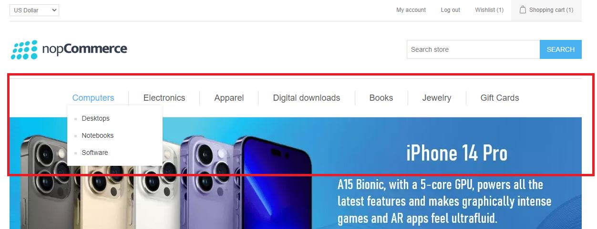
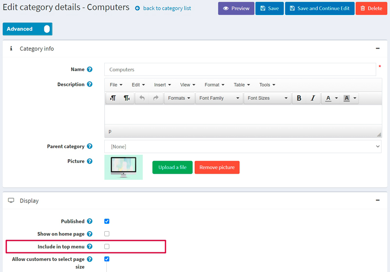
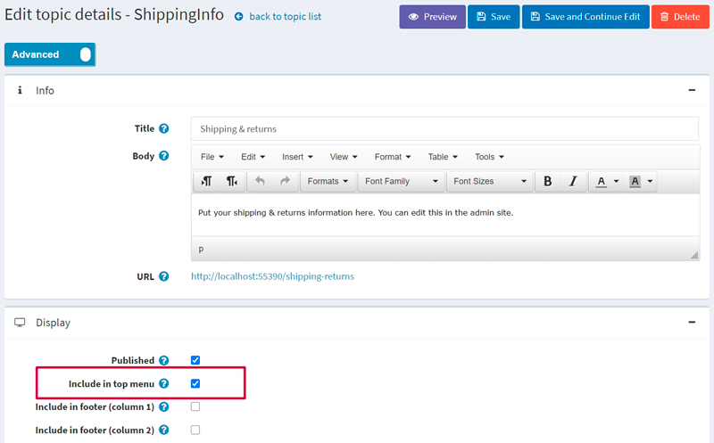
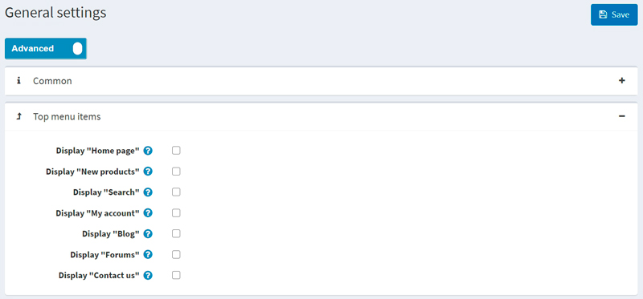
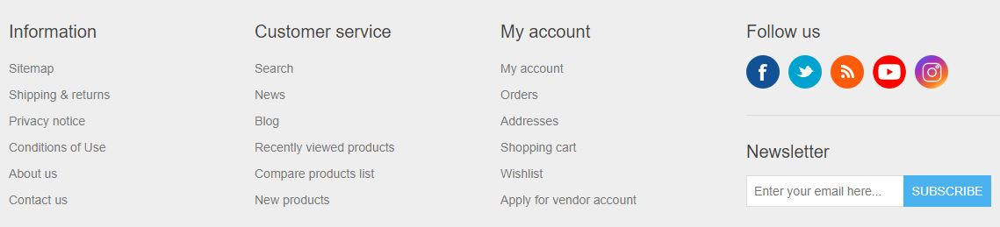
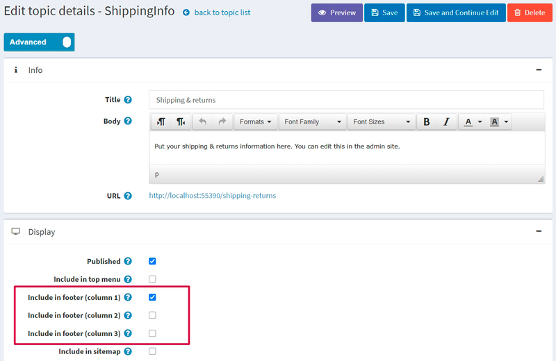
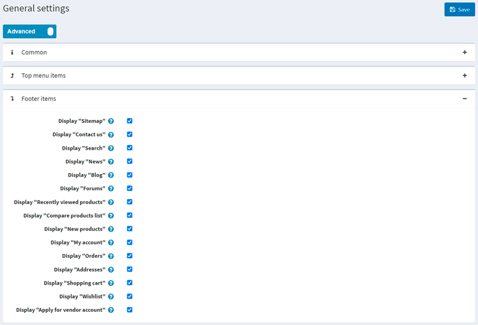
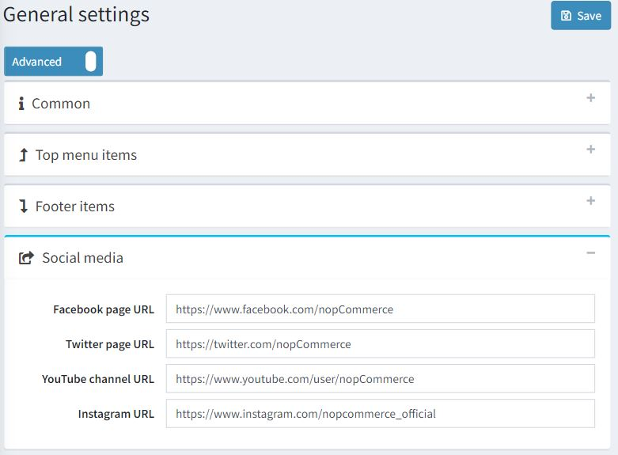
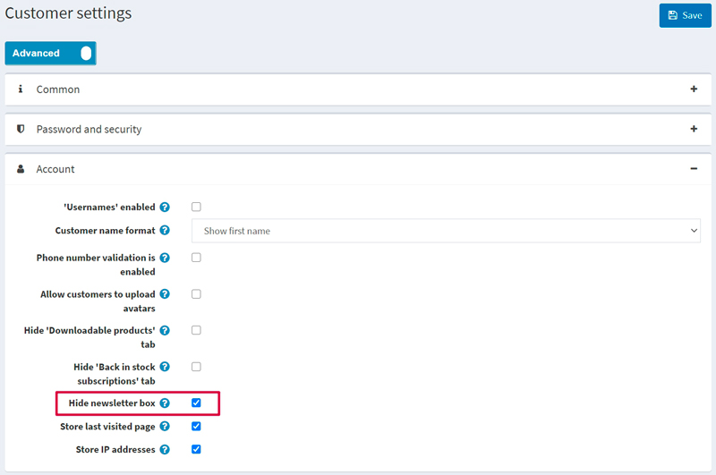

頂部選單與頁尾
Warning
本文章適用於 nopCommerce 4.80 及以下版本。自 nopCommerce 4.90 起開始使用的全新選單產生方式，請參考 選單 (Menu) 一文。
在 nopCommerce 中，您可以自行決定頂部選單與頁尾的顯示方式。您可以將最重要且吸引人的連結放置於頂部選單，以吸引更多顧客；並將服務相關連結新增至頁尾，為您的顧客提供目前的商店資訊。
頂部選單
在 Default Clean 佈景主題中，頂部選單呈現如下：

如您所見，它會顯示商店分類。請注意，若您希望某個分類顯示在頂部選單中，您必須在分類編輯頁面勾選 Include in top menu 核取方塊。詳細資訊請參閱下文。
您可以在頂部選單中包含以下項目：
- 分類
- 自訂內容頁面 (Topics)
- 網站區塊的連結
請參閱下方關於如何新增上述各項目的說明。
商品分類
若要將商品分類包含在頂部選單中，請前往管理後台的分類編輯頁面：選擇 目錄 → 商品分類。接著點擊該分類旁邊的 編輯 按鈕。畫面將顯示 編輯分類詳情 視窗：

勾選 包含在頂部選單 核取方塊並點擊 儲存。
Note
如果此分類為子分類，請確保其父分類也啟用了此屬性。
自訂內容頁面（pages）
若要將內容頁面包含在頂部選單中，請前往管理後台的內容頁面編輯頁面：選擇 內容管理 → 內容頁面（pages）。接著點擊該內容頁面旁邊的 編輯 按鈕。此時會顯示 編輯內容頁面詳細資料 視窗：

勾選 包含於頂部選單 核取方塊並點擊 儲存。
連結至網站區塊
若要將網站的某些區塊包含在頂部選單中，請前往 設定 → 設定 → 一般設定。接著進入「頂部選單項目」面板：

從下列清單中選擇您想要顯示於頂部選單的項目：
- 顯示「首頁」
- 顯示「新品」
- 顯示「搜尋」
- 顯示「我的帳戶」
- 顯示「部落格」
- 顯示「論壇」
- 顯示「聯絡我們」
然後點擊 儲存。
Note
只有當「新品」頁面在 設定 → 設定 → 目錄設定 頁面（「其他區塊」面板）中啟用時，才會顯示「新品」選單項目。
頁尾
在 Default Clean 佈景主題中，頁尾顯示如下：

預設情況下，它會顯示分為三種類型的網站區塊連結：資訊、顧客服務、我的帳戶。您可以移除任何已顯示的連結或加入新的連結。
您可以在頁尾包含以下項目：
- 自訂內容頁面（Topic）
- 網站區塊的連結
請參閱下方說明，了解如何加入這些項目。
自訂內容頁面
若要在頁尾包含一個內容頁面（Topic），請前往管理後台的內容頁面編輯頁面：選擇 內容管理 → 內容頁面 (頁面)。接著點擊該內容頁面旁的 編輯 按鈕。此時會顯示 編輯內容頁面詳細資訊 視窗：

選擇您希望顯示內容頁面連結的位置。您可以勾選一個或多個核取方塊：
- 包含在頁尾 (欄位 1)
- 包含在頁尾 (欄位 2)
- 包含在頁尾 (欄位 3)
例如，如果您選擇 包含在頁尾 (欄位 1)，該連結就會顯示在 資訊 欄位中。
點擊 儲存 以儲存變更。
連結至網站的區段
若要在頁尾包含網站的某些區段，請前往 設定 → 設定 → 一般設定。接著進入 頁尾項目 (Footer items) 面板：

從下列清單中選擇您希望顯示在頁尾的項目：
- 顯示「網站地圖」
Note
「網站地圖」選單項目僅會在 設定 → 設定 → 一般設定 頁面（網站地圖 面板）中勾選 啟用網站地圖 核取方塊時顯示。
- 顯示「聯絡我們」
- 顯示「搜尋」
- 顯示「新聞」
- 顯示「部落格」
- 顯示「論壇」
- 顯示「最近瀏覽過的商品」
Note
「最近瀏覽過的商品」選單項目僅會在 設定 → 設定 → 目錄設定 頁面（額外區段 面板）中啟用「最近瀏覽過的商品」頁面時顯示。
- 顯示「商品比較清單」
Note
「商品比較清單」選單項目僅會在 設定 → 設定 → 目錄設定 頁面（商品比較 面板）中啟用「商品比較」功能時顯示。
- 顯示「新商品」
Note
「新商品」選單項目僅會在 設定 → 設定 → 目錄設定 頁面（額外區段 面板）中啟用「新商品」頁面時顯示。
- 顯示「我的帳戶」
- 顯示「訂單」
- 顯示「地址」
- 顯示「購物車」
Note
「購物車」選單項目僅會在該顧客的角色已啟用「公開商店。啟用購物車」權限時，才會對該名顧客顯示。若要管理權限，請前往 設定 → 存取控制清單 頁面。或者，您可以在 存取控制清單 章節閱讀更多關於權限的資訊。
- 顯示「願望清單」
Note
「願望清單」選單項目僅會在該顧客的角色已啟用「公開商店。啟用願望清單」權限時，才會對該名顧客顯示。若要管理權限，請前往 設定 → 存取控制清單 頁面。或者，您可以在 存取控制清單 章節閱讀更多關於權限的資訊。
- 顯示「申請供應商帳戶」
Note
「申請供應商帳戶」選單項目僅會在 設定 → 設定 → 供應商設定 頁面（一般 面板）中勾選 允許顧客申請供應商帳戶 核取方塊時顯示。
點擊 儲存 以儲存變更。
追蹤我們
若要自訂頁尾的 追蹤我們 區塊，請前往 設定 → 設定 → 一般設定。接著前往 社群媒體 面板，如下所示：

輸入您的社群媒體連結：
- Facebook 頁面 URL
- Twitter 頁面 URL
- YouTube 頻道 URL
- Instagram 頁面 URL
如果您想要啟用或停用頁尾的 RSS 連結，您需要前往 設定 → 設定 → 新聞設定 頁面（一般 面板）中，對應地啟用或停用新聞功能。
電子報
電子報區塊預設會顯示在頁尾。若要隱藏此區塊，請前往 設定 → 設定 → 顧客設定。進入「帳戶」面板並勾選 隱藏電子報方塊 (Hide newsletter box) 核取方塊，如下所示：

點擊 儲存 (Save) 以儲存變更。頁尾將會隨之更新。
Powered by nopCommerce
根據 nopCommerce 授權條款，若未購買「版權移除金鑰」（Copyright removal key）：
- 您不可以移除或隱藏出現在 nopCommerce 驅動網站每個頁面底部的「Powered by nopCommerce」聲明。
- 當使用者點擊「Powered by nopCommerce」文字時，必須導向至 https://www.nopcommerce.com。此「Powered by nopCommerce」連結必須保持與程式原始碼中提供的格式相同，不得進行任何編輯。此義務同樣適用於任何複製品或衍生作品！
- 您商店（網站）頁尾的版權聲明必須保持完整、未經編輯且清晰可見。請勿以任何方式嘗試編輯、移除或隱藏該版權聲明。
在購買「版權移除金鑰」後，您將被允許移除「Powered by nopCommerce」聲明。 侵犯版權是違法行為，敬請知悉。
如需更多資訊，請造訪 nopCommerce 版權移除金鑰 頁面。